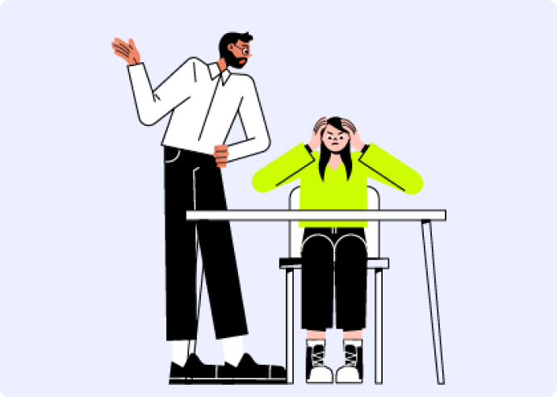

Індикатори

Як визначити, у яких стосунках ви перебуваєте?
У нездорових стосунках здатність усвідомлювати ступінь загрози погіршується, адже партнери(-ки) перебувають у хронічному стресі, який негативно впливає на мисленеві здібності та оцінку ситуації. Щоб розібратися, у яких стосунках ви перебуваєте, можна орієнтуватися на такі критерії:
Комунікація
Здорові стосунки
- відкритість, довіра
- прийняття думки партнера(-ки), взаємоповага
- вільне висловлювання власної позиції
- пошук спільних рішень
- конфлікти вирішуються шляхом співпраці
Токсичні стосунки
- пред'явлення претензій, вимог, очікувань
- відсутність відкритого обговорення потреб
- байдужість до думки партнера(-ки)
- замовчування проблем у стосунках
- маніпуляції
Насильство у стосунках
- домінування, шантаж, залякування
- страх висловлювати власну позицію
- сумніви у цінності партнера(-ки), його/її психічного здоров’я
- знецінювання особистості, потреб та позиції партнера(-ки)
Емоційні прояви
Тілесний контакт
Здорові стосунки
- прагнення до тілесного контакту та інтимної близькості
- задоволення від сексуальних стосунків
- ніжність до партнера(-ки)
- бажання захищати інтимність пари
Токсичні стосунки
- тілесний контакт та інтимна близькість є предметом маніпуляцій та зловживань
- сексуальне бажання нестабільне: від невгамовної пристрасті до відрази
- зради
Насильство у стосунках
- уникання тілесних контактів та інтимної близькості
- страх, тривога і відраза під час тілесних контактів й інтимної близькості
- згвалтування